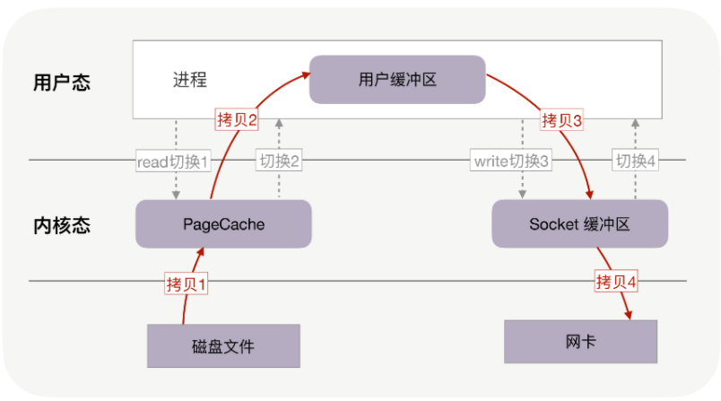
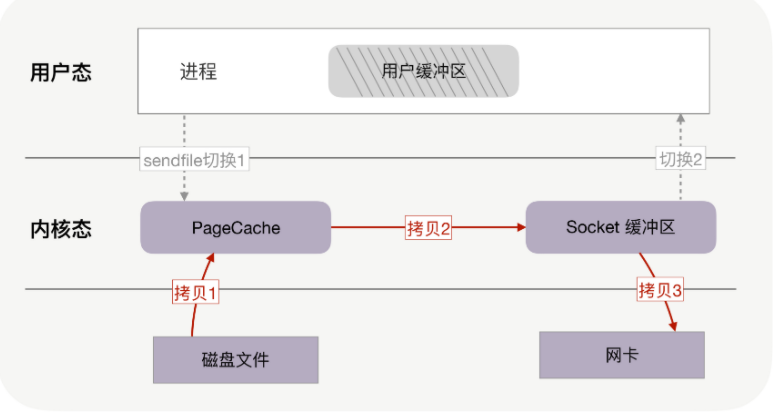
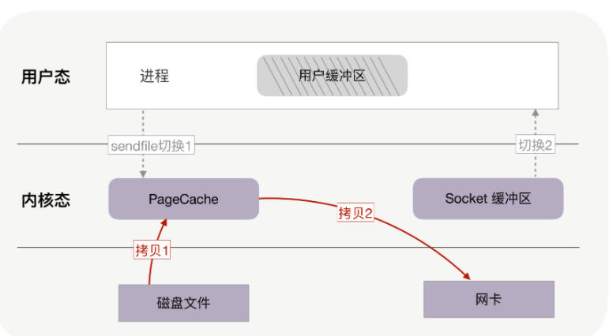
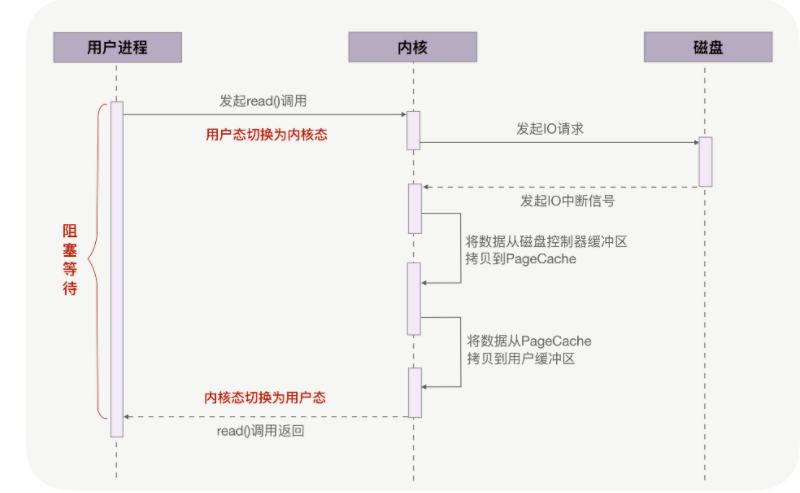

第四节 磁盘高效地传输文件零拷贝：PageCache
当索引的大小超过内存时，就会用磁盘存放索引。磁盘的读写速度远慢于内存，所以才针对磁盘设计了减少读写次数的 B 树索引。
磁盘是主机中最慢的硬件之一，常常是性能瓶颈，所以优化它能获得立竿见影的效果。
针对磁盘的优化技术层出不穷，比如零拷贝、直接 IO、异步 IO 等等。这些优化技术为了降低操作时延、提升系统的吞吐量，围绕着内核中的磁盘高速缓存（也叫 PageCache），去减少 CPU 和磁盘设备的工作量。
1、如何实现文件传输？
服务器提供文件传输功能，需要将磁盘上的文件读取出来，通过网络协议发送到客户端。如果需要你自己编码实现这个文件传输功能，你会怎么实现呢？
通常，你会选择最直接的方法：
从网络请求中找出文件在磁盘中的路径后，如果这个文件比较大，假设有 320MB，可以在内存中分配 32KB 的缓冲区，再把文件分成一万份，每份只有 32KB，这样，从文件的起始位置读入 32KB 到缓冲区，再通过网络 API 把这 32KB 发送到客户端。接着重复一万次，直到把完整的文件都发送完毕。如下图所示：

不过这个方案性能并不好，主要有两个原因。
首先，它至少经历了 4 万次用户态与内核态的上下文切换。
因为每处理 32KB 的消息，就需要一次 read 调用和一次 write 调用，每次系统调用都得先从用户态切换到内核态，等内核完成任务后，再从内核态切换回用户态。可见，每处理 32KB，就有 4 次上下文切换，重复 1 万次后就有 4 万次切换。
上下文切换的成本并不小，虽然一次切换仅消耗几十纳秒到几微秒，但高并发服务会放大这类时间的消耗。
其次，这个方案做了 4 万次内存拷贝，对 320MB 文件拷贝的字节数也翻了 4 倍，到了 1280MB
所以要想提升传输文件的性能，需要从降低上下文切换的频率和内存拷贝次数两个方向入手。
2、零拷贝如何提升文件传输性能？
2-1 如何降低上下文切换的频率
为什么读取磁盘文件时，一定要做上下文切换呢？
这是因为，读取磁盘或者操作网卡都由操作系统内核完成。内核负责管理系统上的所有进程，它的权限最高，工作环境与用户进程完全不同。
只要我们的代码执行 read 或者 write 这样的系统调用，一定会发生 2 次上下文切换：
- 首先从用户态切换到内核态，当内核执行完任务后，
- 再切换回用户态交由进程代码执行。
如果想减少上下文切换次数，就一定要减少系统调用的次数。解决方案就是把 read、write 两次系统调用合并成一次，在内核中完成磁盘与网卡的数据交换。
2-2 如何减少内存拷贝次数
每周期中的 4 次内存拷贝，其中与物理设备相关的 2 次拷贝是必不可少的，包括：把磁盘内容拷贝到内存，以及把内存拷贝到网卡。
但另外 2 次与用户缓冲区相关的拷贝动作都不是必需的，因为在把磁盘文件发到网络的场景中，用户缓冲区没有必须存在的理由。
如果内核在读取文件后，直接把 PageCache 中的内容拷贝到 Socket 缓冲区，待到网卡发送完毕后，再通知进程，这样就只有 2 次上下文切换，和 3 次内存拷贝。

如果网卡支持 SG-DMA（The Scatter-Gather Direct Memory Access）技术，还可以再去除 Socket 缓冲区的拷贝，这样一共只有 2 次内存拷贝。

实际上，这就是零拷贝技术。
它是操作系统提供的新函数，同时接收文件描述符和 TCP socket 作为输入参数，这样执行时就可以完全在内核态完成内存拷贝，既减少了内存拷贝次数，也降低了上下文切换次数。
而且，零拷贝取消了用户缓冲区后，不只降低了用户内存的消耗，还通过最大化利用 socket 缓冲区中的内存，间接地再一次减少了系统调用的次数，从而带来了大幅减少上下文切换次数的机会！
3-3 零拷贝使我们不必关心 socket 缓冲区的大小
比如，调用零拷贝发送方法时，尽可以把发送字节数设为文件的所有未发送字节数，例如 320MB，也许此时 socket 缓冲区大小为 1.4MB，那么一次性就会发送 1.4MB 到客户端，而不是只有 32KB。这意味着对于 1.4MB 的 1 次零拷贝，仅带来 2 次上下文切换，而不使用零拷贝且用户缓冲区为 32KB 时，经历了 176 次（4 * 1.4MB/32KB）上下文切换
零拷贝可以把性能提升至少一倍以上！对文章开头提到的 320MB 文件的传输，当 socket 缓冲区在 1.4MB 左右时，只需要 4 百多次上下文切换，以及 4 百多次内存拷贝，拷贝的数据量也仅有 640MB，这样，不只请求时延会降低，处理每个请求消耗的 CPU 资源也会更少，从而支持更多的并发请求。
4、PageCache，磁盘高速缓存
读取文件时，是先把磁盘文件拷贝到 PageCache 上，再拷贝到进程中。为什么这样做呢？有两个原因所致。
第一，由于磁盘比内存的速度慢许多，所以我们应该想办法把读写磁盘替换成读写内存，比如把磁盘中的数据复制到内存中，就可以用读内存替换读磁盘。但是，内存空间远比磁盘要小，内存中注定只能复制一小部分磁盘中的数据。
选择哪些数据复制到内存呢？通常，刚被访问的数据在短时间内再次被访问的概率很高（这也叫“时间局部性”原理），用 PageCache 缓存最近访问的数据，当空间不足时淘汰最久未被访问的缓存（即 LRU 算法）。读磁盘时优先到 PageCache 中找一找，如果数据存在便直接返回，这便大大提升了读磁盘的性能。
第二，读取磁盘数据时，需要先找到数据所在的位置，对于机械磁盘来说，就是旋转磁头到数据所在的扇区，再开始顺序读取数据。其中，旋转磁头耗时很长，为了降低它的影响，PageCache 使用了预读功能。
也就是说，虽然 read 方法只读取了 0-32KB 的字节，但内核会把其后的 32-64KB 也读取到 PageCache，这后 32KB 读取的成本很低。如果在 32-64KB 淘汰出 PageCache 前，进程读取到它了，收益就非常大
从这两点可以看到 PageCache 的优点，它在 90% 以上场景下都会提升磁盘性能，但在某些情况下，PageCache 会不起作用，甚至由于多做了一次内存拷贝，造成性能的降低。在这些场景中，使用了 PageCache 的零拷贝也会损失性能。
就是在传输大文件的时候。比如，你有很多 GB 级的文件需要传输，每当用户访问这些大文件时，内核就会把它们载入到 PageCache 中，这些大文件很快会把有限的 PageCache 占满。
然而，由于文件太大，文件中某一部分内容被再次访问到的概率其实非常低。这带来了 2 个问题：首先，由于 PageCache 长期被大文件占据，热点小文件就无法充分使用 PageCache，它们读起来变慢了；其次，PageCache 中的大文件没有享受到缓存的好处，但却耗费 CPU（或者 DMA）多拷贝到 PageCache 一次。
高并发场景下，为了防止 PageCache 被大文件占满后不再对小文件产生作用，大文件不应使用 PageCache，进而也不应使用零拷贝技术处理。
5、异步 IO + 直接 IO
高并发场景处理大文件时，应当使用异步 IO 和直接 IO 来替换零拷贝技术。
当调用 read 方法读取文件时，实际上 read 方法会在磁盘寻址过程中阻塞等待，导致进程无法并发地处理其他任务，如下图所示：

异步 IO 并没有拷贝到 PageCache 中，这其实是异步 IO 实现上的缺陷。经过 PageCache 的 IO 我们称为缓存 IO，它与虚拟内存系统耦合太紧，导致异步 IO 从诞生起到现在都不支持缓存 IO。
绕过 PageCache 的 IO 是个新物种，我们把它称为直接 IO。对于磁盘，异步 IO 只支持直接 IO。
直接 IO 的应用场景并不多，主要有两种：
- 第一，应用程序已经实现了磁盘文件的缓存，不需要 PageCache 再次缓存，引发额外的性能消耗。比如 MySQL 等数据库就使用直接 IO；
- 第二，高并发下传输大文件，我们上文提到过，大文件难以命中 PageCache 缓存，又带来额外的内存拷贝，同时还挤占了小文件使用 PageCache 时需要的内存，因此，这时应该使用直接 IO。
当然，直接 IO 也有一定的缺点。
- 除了缓存外，内核（IO 调度算法）会试图缓存尽量多的连续 IO 在 PageCache 中，最后合并成一个更大的 IO 再发给磁盘，这样可以减少磁盘的寻址操作；
- 另外，内核也会预读后续的 IO 放在 PageCache 中，减少磁盘操作。直接 IO 绕过了 PageCache，所以无法享受这些性能提升。
有了直接 IO 后，异步 IO 就可以无阻塞地读取文件了。现在，大文件由异步 IO 和直接 IO 处理，小文件则交由零拷贝处理，至于判断文件大小的阈值可以灵活配置
6、本节小结
基于用户缓冲区传输文件时，过多的内存拷贝与上下文切换次数会降低性能。
零拷贝技术在内核中完成内存拷贝，天然降低了内存拷贝次数。它通过一次系统调用合并了磁盘读取与网络发送两个操作，降低了上下文切换次数。尤其是，由于拷贝在内核中完成，它可以最大化使用 socket 缓冲区的可用空间，从而提高了一次系统调用中处理的数据量，进一步降低了上下文切换次数。
零拷贝技术基于 PageCache，而 PageCache 缓存了最近访问过的数据，提升了访问缓存数据的性能，同时，为了解决机械磁盘寻址慢的问题，它还协助 IO 调度算法实现了 IO 合并与预读（这也是顺序读比随机读性能好的原因），这进一步提升了零拷贝的性能。几乎所有操作系统都支持零拷贝，如果应用场景就是把文件发送到网络中，那么我们应当选择使用了零拷贝的解决方案。
不过，零拷贝有一个缺点，就是不允许进程对文件内容作一些加工再发送，比如数据压缩后再发送。另外，当 PageCache 引发负作用时，也不能使用零拷贝，此时可以用异步 IO+ 直接 IO 替换。我们通常会设定一个文件大小阈值，针对大文件使用异步 IO 和直接 IO，而对小文件使用零拷贝。
事实上 PageCache 对写操作也有很大的性能提升，因为 write 方法在写入内存中的 PageCache 后就会返回，速度非常快，由内核负责异步地把 PageCache 刷新到磁盘中，这里不再展开。
高并发场景下，为了防止 PageCache 被大文件占满后不再对小文件产生作用，大文件不应使用 PageCache，进而也不应使用零拷贝技术处理。
这里面的性能优化技术，要么减少了磁盘的工作量（比如 PageCache 缓存），要么减少了 CPU 的工作量（比如直接 IO），要么提高了内存的利用率（比如零拷贝）。
高并发场景处理大文件时，应当使用异步 IO 和直接 IO 来替换零拷贝技术。